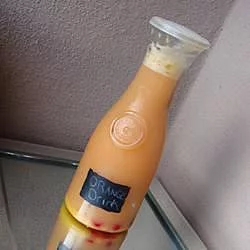

Orange Drink

Description
A very simple and refreshing carbonated orange fruit drink.
Ingredients
- 1 (12 fluid ounce) can frozen orange juice concentrate
- 2 liters ginger ale soda
- 1 orange, sliced into rounds
- 1 (4 ounce) jar maraschino cherries
Steps
- Empty frozen orange juice into a large pitcher. VERY SLOWLY pour in the ginger ale. It is extremely important that you pour slowly because the soda will foam up and lose its carbonation if poured fast. Gently stir until all of orange juice is melted. Toss in all but 4 of the orange slices.
- Cut reserved orange slices in half. Pour beverage into 8 glasses and garnish with half slice of orange and a cherry.